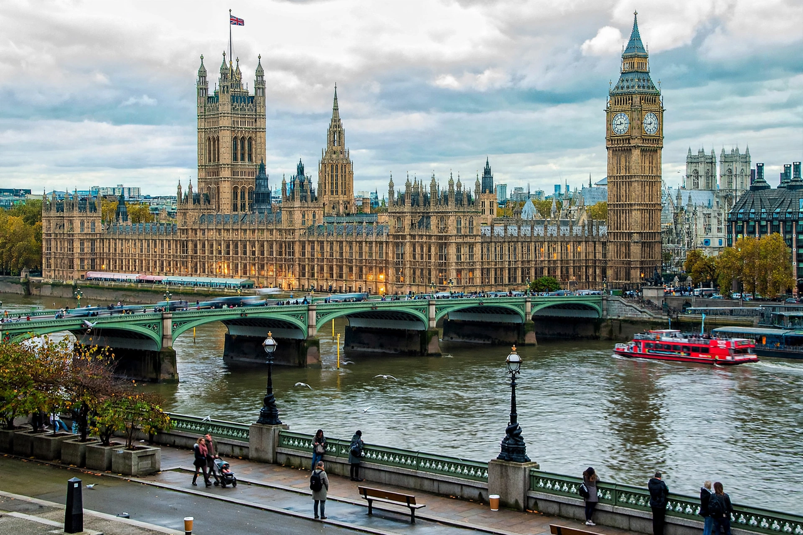

The Parliament of the United Kingdom is the supreme legislative body of the United Kingdom, meeting at the Palace of Westminster in London. It consists of three parts: the monarch, the House of Lords, and the elected House of Commons. Parliament evolved from the councils of the medieval English kings and has often been called the "Mother of Parliaments".
The House of Commons has 650 members (MPs), each elected from a single-member constituency by first-past-the-post. Constituency boundaries are reviewed periodically by the boundary commissions. The House of Lords is an appointed chamber of life peers, bishops and a small number of hereditary peers. Under the doctrine of parliamentary sovereignty, Parliament can in principle make or unmake any law.
Parliament makes legislation, authorises taxation and spending, and scrutinises the government through debates, select committees and Question Time. The government is formed from Parliament and is collectively responsible to the Commons, in accordance with the principle of responsible government.
Key stages in its development include Magna Carta (1215), the Parliament of Simon de Montfort (1265), the Glorious Revolution and Bill of Rights 1689, the Acts of Union (1707) creating the Parliament of Great Britain, and the Parliament Acts of 1911 and 1949, which subordinated the Lords to the Commons.